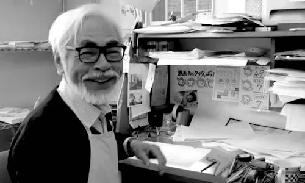

Conan: The Boy in the Future
A young boy in a post-apocalyptic world fights to protect his friends and uncover the truth behind powerful forces shaping humanity’s future.
 My Ghibli
My Ghibli



"Reality is for people who lack imagination" - Hayao Miyazaki